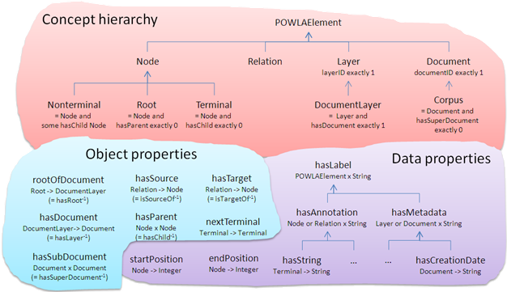

POWLA: Modeling linguistic corpora in OWL/DL
POWLA is a formalism that allows to represent linguistic corpora in RDF. POWLA is an OWL/DL formalization of an abstract data model, PAULA, that has been developed to represent (a) any type of linguistic annotation applicable to textual data, and (b) any combination of annotation layers. At the moment, the PAULA data model is linearized in standoff XML and in relANNIS, a table format for an SQL data base. With POWLA, PAULA data can also be linearized in OWL/RDF, and thus, researchers can use OWL/DL reasoners for consistency check, OWL and RDF APIs for reading and writing, RDF triple stores for storing and SPARQL for querying linguistic corpora. Beyond this, POWLA does not only represent corpora in an interoperable way, but also such that they can be represented as Linked Data.
For a detailed motivation of POWLA and its application to facilitate interoperability of annotated corpora, see:
- Christian Chiarcos (accepted), POWLA: Modeling linguistic corpora in OWL/DL, in: Proceedings of ESWC 2012, Heraklion, Greece, May 2012.
- Christian Chiarcos (accepted), A generic formalism to represent linguistic corpora in RDF and OWL/DL, in: Proceedings of LREC 2012, Istanbul, Turkey, May 2012.
- Christian Chiarcos (2012), Interoperability of Corpora and Annotations, in: Christian Chiarcos, Sebastian Nordhoff and Sebastian Hellmann (eds.), Linked Data in Linguistics. Representing Language Data and Metadata (companion volume of the Workshop on Linked Data in Linguistics 2012 (LDL-2012), held in conjunction with the 34th Annual Meeting of the German Linguistic Society (DGfS), March 2012, Frankfurt/M., Germany), Springer, Heidelberg, p. 161-179, PDF
The idea underlying POWLA is to represent linguistic annotations by means of RDF, to employ OWL/DL to define data types and consistency constraints for these RDF data, and to adopt these data types and constraints from the PAULA data model. Whereas comparable state-of-the-art approaches on corpus interoperability focus on complex standoff XML formats specifically designed for linguistic data, this approach offers three crucial advantages:
- The increasing number of RDF data bases provides us with convenient means for the management of linguistic data collections.
- The RDF representation of linguistic corpora can be augmented with a formal data model implemented as an OWL/DL specification of data types and constraints for these.
- RDF resources can be freely interconnected with each other (multi-layer annotations) and with lexical-semantic resources that make use of the same representation formalism, e.g., those available from the Linked Open Data cloud.
Important notice: POWLA has successfully been applied to the conversion, storing and querying of multi-layer corpora. It is, however, still work in progress, and will be release in June 2012.
Data types
Status
- A draft version of the POWLA ontology is available.
- Two data sets have been converted (the German NEGRA corpus and parts of the Manually Annotated Sub-Corpus (MASC, v. 1.0.3) of the American National Corpus).
- The consistency of the converted data has been checked with an OWL/DL validator.
- The data has been loaded into an RDF quad store (Open Link Virtuoso).
- A set of SPARQL macros has been designed to emulate ANNIS-QL, a query language for multi-layer corpora.
- For evaluation, query results have been compared to results obtained with the ANNIS corpus information system
- Based on this evaluation, the POWLA ontology is currently revised (shorter IDs, additional properties, etc.)
- A Sourceforge project has been created, where ontologies, converters and data samples discussed here are available from the SVN.
Resources
- Documentation (draft)
- POWLA ontology (draft)
- Data sample with syntax annotations (German newspaper text with syntax annotation, excerpt of publicly available samples of the NEGRA corpus)
- Data sample with multi-layer annotations (register-balanced corpus of American English, MASC corpus, file HistoryGreek.anc)
- Multilingual sample corpus with alignment (in preparation, Europarl corpus, OPUS edition)
- Converter from TIGER XML to POWLA (XSLT), available from our Sourceforge SVN repository
- Converter from GrAF to POWLA (JAVA), available from our Sourceforge SVN repository
- JAVA preprocessor that provides SPARQL macros to emulate ANNIS-QL, a query language for multi-layer corpora, on POWLA data (optimized for Open Link Virtuoso)